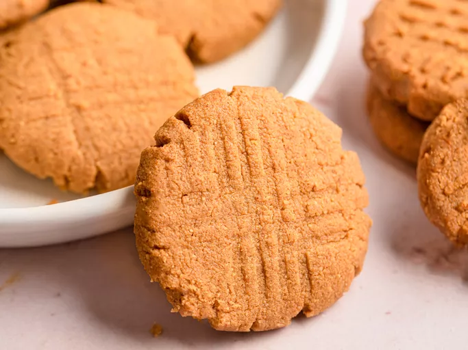

Mac and Cheese
Home

Description
his macaroni and cheese—this pot of creamy, gooey, cheesy, glorious macaroni and cheese—was made with three ingredients in about 10 minutes. Seriously. That's one fewer ingredient than you need to add to the pot to make a box of Kraft macaroni and cheese.
Ingredients
- 6 ounces (170 g) elbow macaroni
- Salt
- 6 ounces (180 ml) evaporated milk
- 6 ounces (170 g) grated mild or medium cheddar cheese, or any good melting cheese, such as Fontina, Gruyère, or Jack
Steps
- Place macaroni in a medium saucepan or skillet and add just enough cold water to cover. Add a pinch of salt and bring to a boil over high heat, stirring frequently. Continue to cook, stirring, until water has been almost completely absorbed and macaroni is just shy of al dente, about 6 minutes.
- Immediately add evaporated milk and bring to a boil. Add cheese. Reduce heat to low and cook, stirring continuously, until cheese is melted and liquid has reduced to a creamy sauce, about 2 minutes longer. Season to taste with more salt and serve immediately.